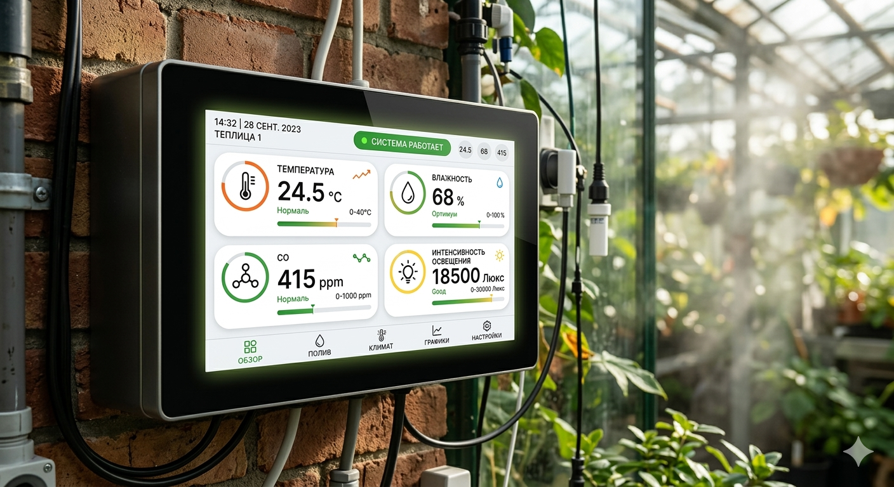
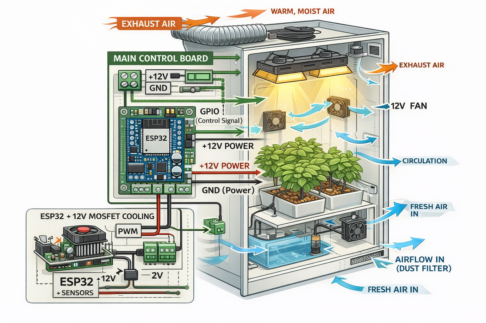
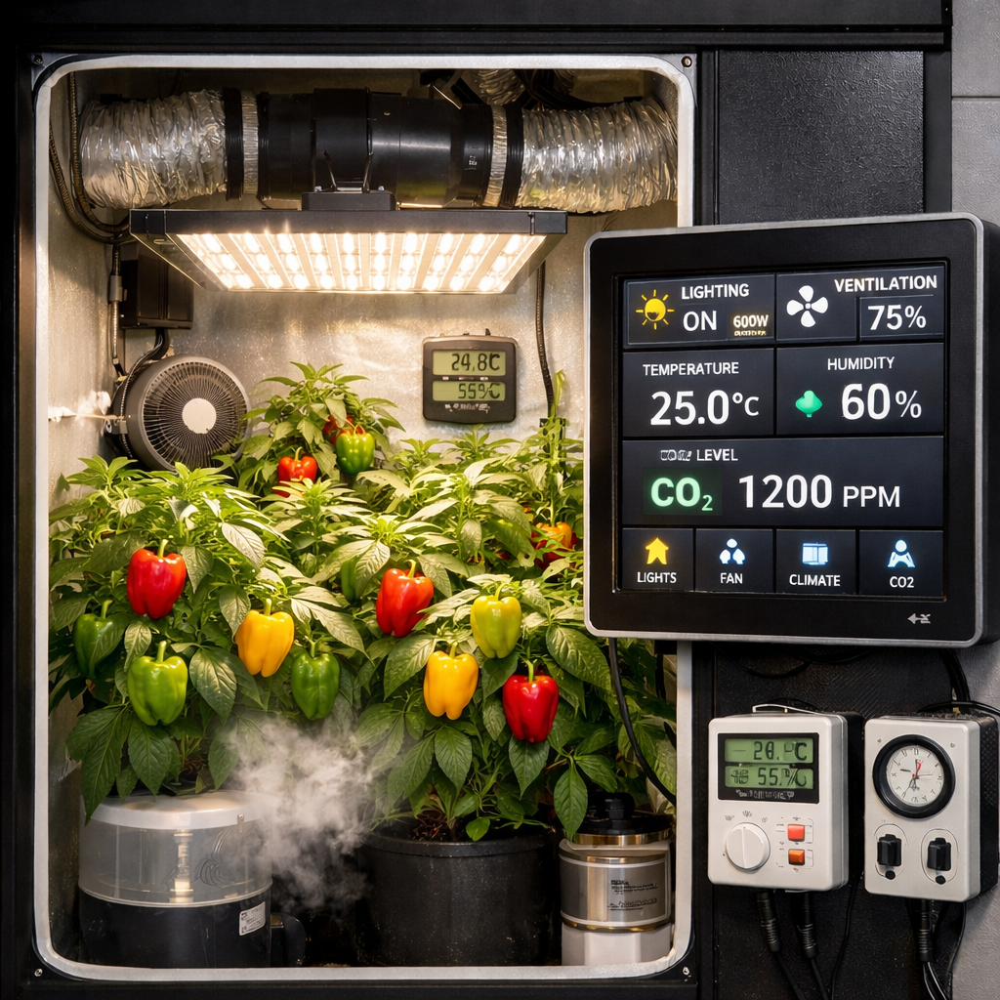
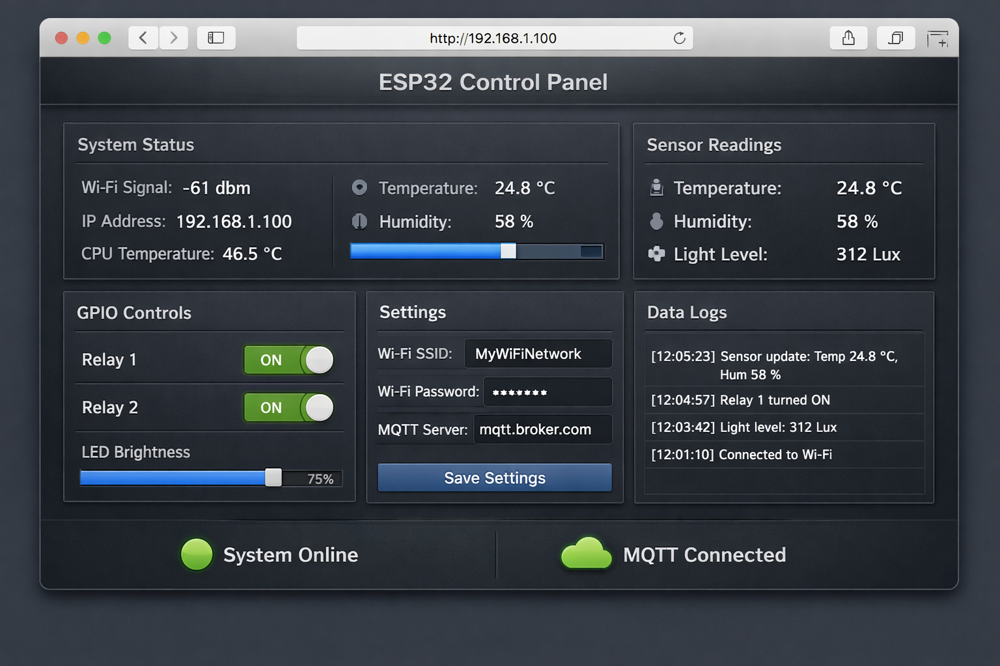

Индивидуальная архитектура
Подбор датчиков, исполнительных узлов и логики управления под вашу задачу, а не по универсальному шаблону.
Проектирование и разработка систем управления для теплиц, гроубоксов и частных объектов: автоматический полив, вентиляция, контроль параметров среды, сценарии работы оборудования и удалённый доступ через Wi-Fi.
Контроль полива, климата, насосов, вентиляции и удалённый мониторинг параметров.
Управление освещением, вытяжкой, притоком воздуха, температурой и влажностью.
Индивидуальная инженерная логика под конкретную задачу, объект и оборудование.
Не шаблонное устройство, а инженерная система, которая собирается под реальные условия эксплуатации, требуемую логику работы и конкретное оборудование.
Подбор датчиков, исполнительных узлов и логики управления под вашу задачу, а не по универсальному шаблону.
Управление параметрами системы через локальный интерфейс, Wi-Fi и контроль текущего состояния в удобном формате.
Решения проектируются с учётом реальной эксплуатации: питание, монтаж, устойчивость и удобство настройки.
Компактное решение для локального управления, отображения текущих параметров и удалённого доступа. Сенсорный интерфейс позволяет быстро настраивать режимы работы, контролировать состояние системы и адаптировать сценарии под конкретный объект.

Для разработки используются современные микроконтроллерные решения, модульная архитектура и инженерный подход к управлению датчиками и исполнительными устройствами.
Микроконтроллерная платформа для управления логикой системы, интерфейсом и сетевыми функциями.
Просмотр параметров, изменение настроек и контроль работы системы без сложной внешней инфраструктуры.
Контроль температуры, влажности, состояния среды и обратной связи по работе оборудования.
Управление насосами, вентиляторами, освещением, клапанами и другим исполнительным оборудованием.
Автоматизация процессов по расписанию, условиям среды и настраиваемым рабочим алгоритмам.
Возможность масштабировать систему и адаптировать её под разные объекты и конфигурации.
Примеры направлений, в которых можно реализовать автоматизацию, контроль параметров и локальный интерфейс управления.

Автоматическое управление насосами, клапанами, сценариями полива и контроль параметров по заданной логике.
Подробнее
Удалённый контроль температуры, влажности и состояния системы через Wi-Fi-интерфейс и локальную панель.
Подробнее
Управление освещением, вытяжкой, притоком воздуха и климатом для стабильной и предсказуемой среды.
Подробнее
Локальный интерфейс настройки, индикации текущих параметров и контроля состояния инженерной системы.
ПодробнееКаждый проект проходит путь от постановки задачи и подбора архитектуры до настройки системы и проверки её работы на объекте.
Определяем, что нужно автоматизировать, какие параметры контролировать и какие режимы работы важны.
Подбираем архитектуру системы, датчики, силовые узлы, интерфейс и логику управления.
Разрабатываем контроллер, подключаем оборудование, настраиваем сценарии и проверяем режимы работы.
Тестируем работу на объекте, корректируем параметры и доводим систему до устойчивого рабочего состояния.
Если вам требуется решение для теплицы, гроубокса или частного объекта — свяжитесь со мной. Подберём архитектуру, определим состав оборудования и реализуем систему управления под реальные условия эксплуатации.
Написать в WhatsApp